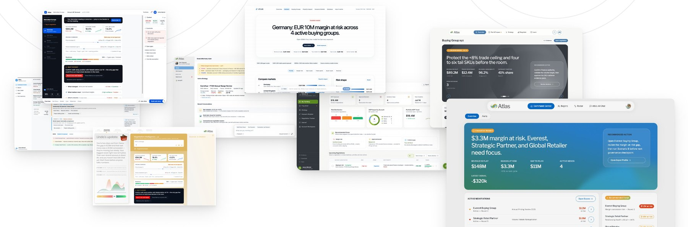
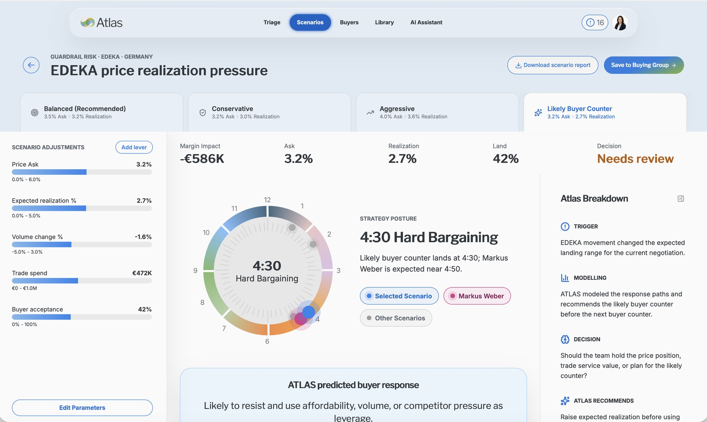
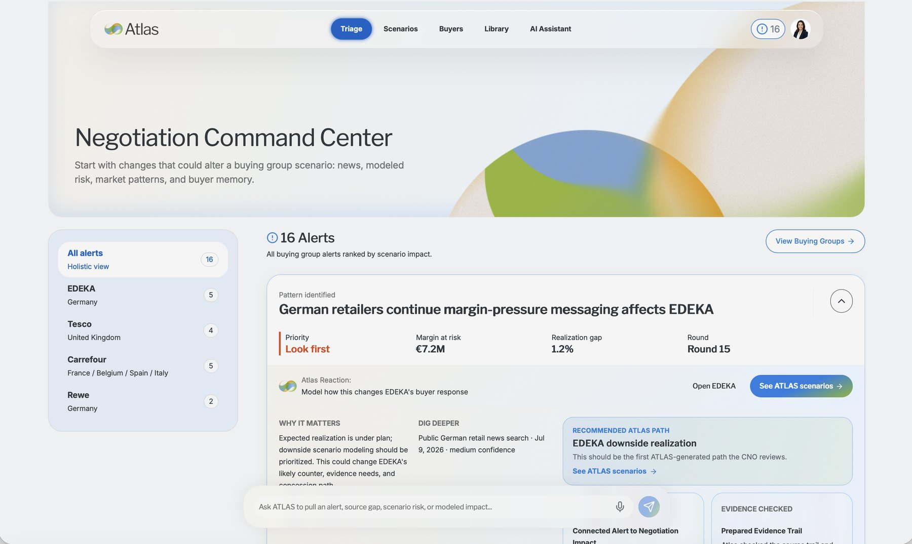
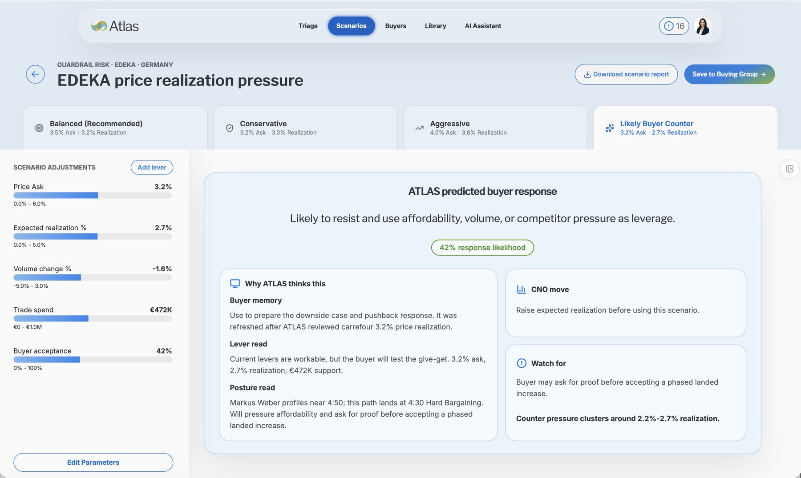

ATLAS · PepsiCo UXD
I championed bringing UX in earlier, so teams reach the right concept before the rework.
On ATLAS, an AI negotiation tool for PepsiCo’s negotiation leaders, a UX-led team prototyped and tested a working concept in three weeks. Other teams now ask for the same approach.
TL;DR

The shift
UX joins after the concept is set.
Ideas get tested late, so every wrong turn becomes rework.
UX close to the problem, from the start.
Prototype and test early with AI tools, so the team learns what works before the build.
The system I set up
As UX lead, I set how a team of six designers worked together, and spent 75–90% of my time on ATLAS.
I proposed working in GitHub with our prototyping tools, mentored another designer on it, and owned merging everyone’s work.
Proxy users plus three synthetic personas built from the jobs to be done.
Design direction written so AI tools produce a polished, human-crafted UI.
Build, measure, learn, every week, with a shared prototype link everyone could open.
At first, everyone said GitHub was too technical, and that I was too technical. I kept it a conversation about value, not tools.
I showed it by doing the work, and started with the people who were curious. Once they saw it working, the rest of the team came on board.
Solving the right problem
In three weeks, we had a prototype aimed at the right problem, tested by people who know the negotiation space, before any build began.
- 3weeks to a tested prototype
- 4rounds of proxy testing
- 3synthetic personas
- 2UX designers acting as users
- 1product lead
- 1transformation lead
Each persona tested a different adoption risk
Can the strategy owner trust it?
Can the field use it in the room?
Can governance control it?
We couldn’t test with CNOs themselves. Proxy users with history in the space stood in, and the personas flagged what to check with CNOs.
The product it produced
ATLAS moved from “just more data” to a negotiation intelligence hub: a question to a defensible answer in under 60 seconds.
The product bet: negotiators don’t need more data, they need to know what to do next. So ATLAS leads with what needs attention, and builds the strategy from there.

Scenarios
- Recommended, conservative, aggressive and likely-buyer scenarios, side by side.
- A breakdown of the trigger, the model and the decision behind every recommendation.
Key decisions
Lead with intelligence, then strategy
ChoseA hub that answers “what should I focus on?” first, with the strategy builder inside it.
Said no toAsking users to build a strategy from a blank page.
Make trust visible everywhere
ChoseSource, freshness, confidence and type (database, modeled or AI-derived) on every number.
Said no toExplaining trust in copy instead of designing it in.
CNO first
ChoseStrategy owners and governance first, with field reports kept simple.
Said no toFull field workflows and live listening inside the POC.

Triage
- Alerts ranked by impact, so negotiators start with what matters most.
- Each alert ends in a recommended path, with the evidence behind it.

Buyer prediction
- A predicted buyer response, with how likely it is.
- The reasoning behind it: buyer memory, levers and posture.
Outcome
3 weeks → a tested concept
I presented ATLAS and the approach to the SVP of Product and the VP of UX. Since then, I’ve used a version of this sprint and the synthetic personas on other projects.
Other teams now ask for rapid POCs like this, including a supply chain team, bringing me in early to prototype alongside product, engineering and transformation. GitHub is on its way to becoming our standard.
Still refining: handoffs between AI tools, and bias in proxy feedback from teams close to the work.
What I took forward
When UX is closer to the problem, teams reach the right concept faster.
Earlier prototyping and testing means less rework later. I now push to bring UX in at the start of AI projects, with prototypes, personas and shared code.